Q39, deuxième tour — ton propre corps : aujourd'hui, essai A, essai B
Aujourd'hui : moitié corps éclairé, moitié ta couleur (bleu glacier). Essai A (--corps-soi-sombre) : sombre partout, un liseré. Essai B (--corps-soi-sombre=fondu, l'idée de Beauté) : sombre seulement là où le corps d'aujourd'hui se fond dans le sol, celui d'aujourd'hui ailleurs. Les trois sont pris au même instant (jeu gelé, bascule en direct). Rendu logiciel du cloud : couleurs et comptes de pixels, pas la cadence ni l'éblouissement. Lacet 45° (225° pour J2), zoom du duel, 1920×1080. « Lisible » : pixel du corps qui diffère d'au moins 10/255 de ce qu'il cache.
La part du corps qui se détache du sol
lumière
classes
sol autour
corps aujourd'hui
corps A
corps B
lisible aujourd'hui
lisible A
lisible B
B hors du corps (allumés)
Dans le noir
4
22
104
19–24
104
100 %
93 %–94 %
100 %
0 (0)
Au bord de sa lumière
4
24
133–134
53–54
133–134
100 %
82 %–85 %
100 %
0 (0)
Sa pleine lumière
4
23–24
132–133
44–49
132–133
100 %
56 %–62 %
100 %
0 (0)
Au bord du cône adverse
4
46–47
131–133
57–63
131–133
98 %–100 %
46 %–53 %
98 %–100 %
0 (0)
Dans la torche adverse (ébloui)
4
116–121
167–170
120–124
167–170
88 %–90 %
44 %–50 %
88 %–90 %
0 (0)
Sous une fusée
3
124–125
119
50–53
50–53
20 %–22 %
99 %–100 %
99 %–100 %
0–1 (0)
Écran scindé
scène
joueur
corps aujourd'hui → A → B
lisible aujourd'hui
lisible A
lisible B
l'adversaire dans sa vue : pixels / changés par A / par B
torches éteintes
J1 (bleu)
93–94 → 17–22 → 93–94
100 %
92 %–94 %
100 %
0 / 0 / 0
torches éteintes
J2 (rouge)
80 → 14 → 80
99 %
89 %–90 %
99 %
542–649 / 0 / 0
torches allumées, J2 braque J1
J1 (bleu)
143–153 → 119–128 → 143–153
65 %–68 %
34 %–51 %
65 %–68 %
0–82 / 0 / 0
torches allumées, J2 braque J1
J2 (rouge)
110–111 → 55–56 → 110–111
99 %–100 %
78 %
99 %–100 %
1773–2043 / 0 / 0
Les illustrations qui montrent des personnages sombres
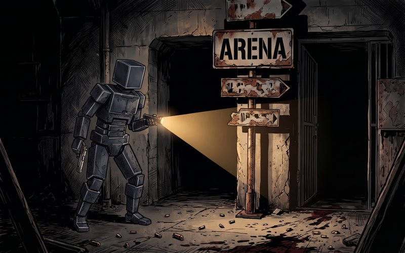
ill_accueil — L'accueil : deux silhouettes sombres dans l'arène, le liseré du côté de la lampe.
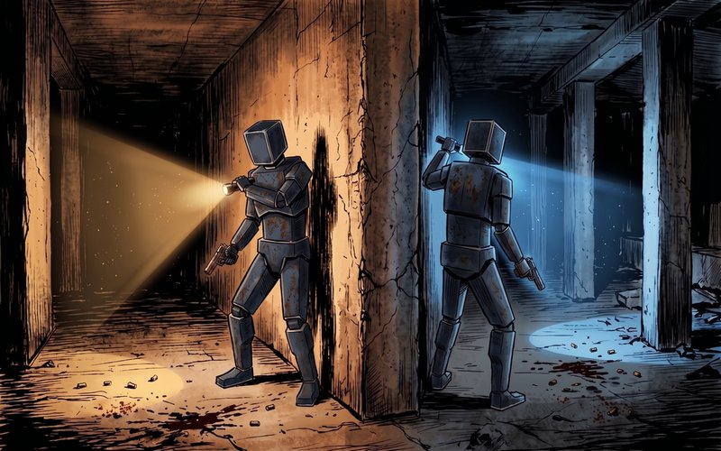
ill_ecran_scinde — L'écran scindé : chaque joueur sombre, cerné de la couleur de sa lampe.
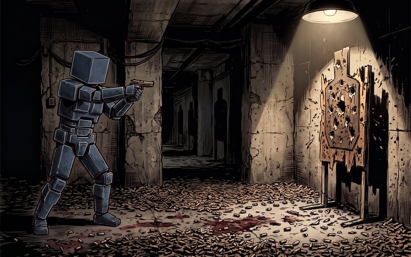
ill_entrainement — L'entraînement : le personnage de dos, sombre, découpé par la lumière du plafond.
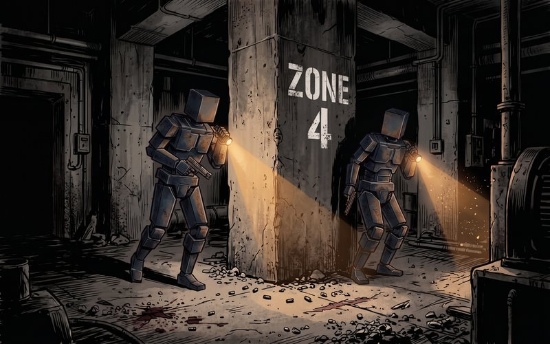
ill_amical — Le mode amical : deux silhouettes en tenue noire autour du pilier.
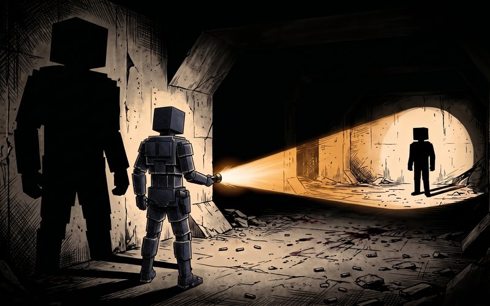
ill_intro_prix — Le prix : le corps noir, le liseré seul dit où il est.
Le Parasite (pistolet)
Dans le noir — torches éteintes ; le sol ne doit sa clarté qu'aux bandeaux LED des murs
aujourd'hui, loupe ×3 — corps 104 · liseré p90 108 · sol 22 · 100 % lisible
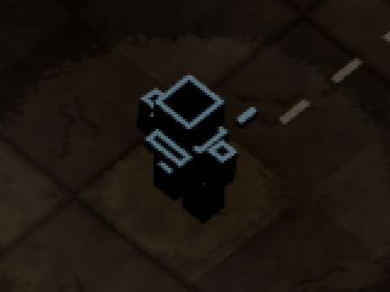
essai A (sombre partout), loupe ×3 — corps 24 · liseré p90 108 · sol 22 · 94 % lisible
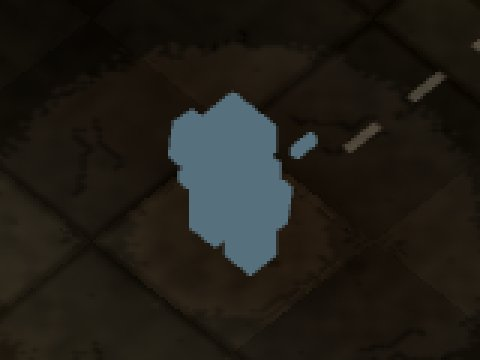
essai B (fondu), loupe ×3 — corps 104 · liseré p90 108 · sol 22 · 100 % lisible
Hors du corps de soi : A change 0 pixels (0 allumés), B 0 (0 allumés) · bruit défaut/défaut recapturé : 0
Au bord de sa lumière — sa torche vers le sud, dans le vide : son corps à la naissance du cône
aujourd'hui, loupe ×3 — corps 134 · liseré p90 145 · sol 24 · 100 % lisible
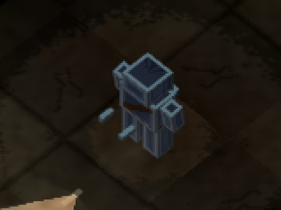
essai A (sombre partout), loupe ×3 — corps 54 · liseré p90 108 · sol 24 · 85 % lisible
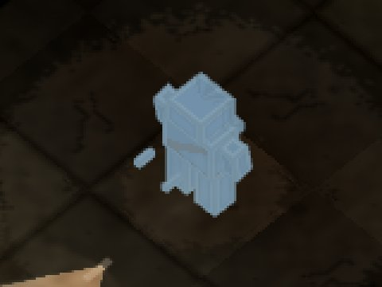
essai B (fondu), loupe ×3 — corps 134 · liseré p90 145 · sol 24 · 100 % lisible
Hors du corps de soi : A change 0 pixels (0 allumés), B 0 (0 allumés) · bruit défaut/défaut recapturé : 0
Sa pleine lumière — sa torche vers le mur haut, à 1,5 case : la rétrodiffusion
aujourd'hui, loupe ×3 — corps 133 · liseré p90 145 · sol 23 · 100 % lisible
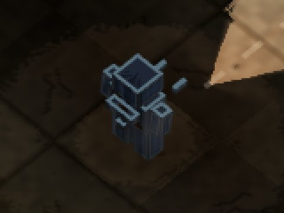
essai A (sombre partout), loupe ×3 — corps 49 · liseré p90 108 · sol 23 · 62 % lisible
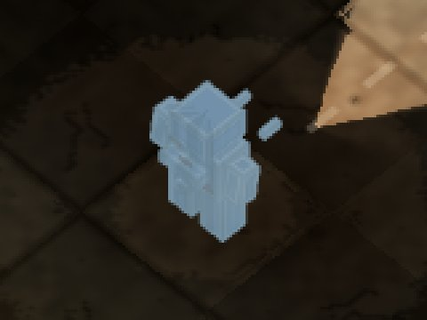
essai B (fondu), loupe ×3 — corps 133 · liseré p90 145 · sol 23 · 100 % lisible
Hors du corps de soi : A change 0 pixels (0 allumés), B 0 (0 allumés) · bruit défaut/défaut recapturé : 0
Au bord du cône adverse — sa torche éteinte, J2 le braque de biais
aujourd'hui, loupe ×3 — corps 133 · liseré p90 148 · sol 46 · 100 % lisible
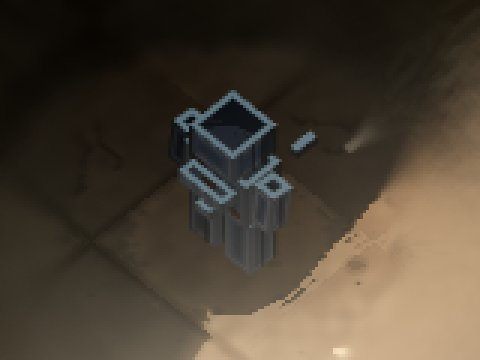
essai A (sombre partout), loupe ×3 — corps 62 · liseré p90 113 · sol 46 · 53 % lisible
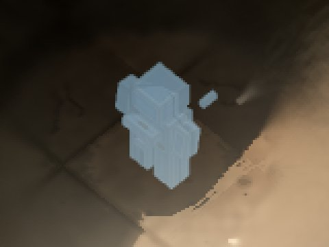
essai B (fondu), loupe ×3 — corps 133 · liseré p90 148 · sol 46 · 100 % lisible
Hors du corps de soi : A change 0 pixels (0 allumés), B 0 (0 allumés) · bruit défaut/défaut recapturé : 0
Dans la torche adverse (ébloui) — sa torche éteinte, J2 le braque droit (le voile laiteux de llvmpipe)
aujourd'hui, loupe ×3 — corps 170 · liseré p90 182 · sol 121 · 88 % lisible
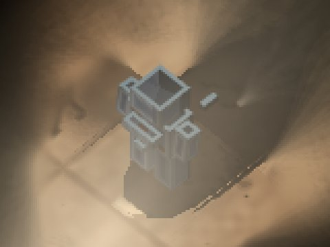
essai A (sombre partout), loupe ×3 — corps 124 · liseré p90 152 · sol 121 · 48 % lisible
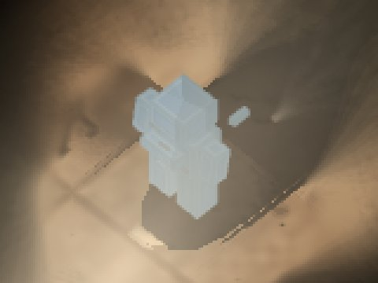
essai B (fondu), loupe ×3 — corps 170 · liseré p90 182 · sol 121 · 88 % lisible
Hors du corps de soi : A change 0 pixels (0 allumés), B 0 (0 allumés) · bruit défaut/défaut recapturé : 0
Sous une fusée — sa torche éteinte, sa fusée lancée 1,5 s plus tôt
aujourd'hui, loupe ×3 — corps 119 · liseré p90 126 · sol 124 · 20 % lisibleessai A (sombre partout), loupe ×3 — corps 53 · liseré p90 85 · sol 124 · 100 % lisible
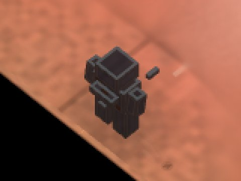
essai B (fondu), loupe ×3 — corps 53 · liseré p90 85 · sol 124 · 100 % lisible
Hors du corps de soi : A change 1 pixels (0 allumés), B 1 (0 allumés) · bruit défaut/défaut recapturé : 0
Le Terrassier (pompe)
Dans le noir — torches éteintes ; le sol ne doit sa clarté qu'aux bandeaux LED des murs
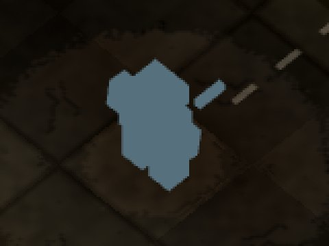
aujourd'hui, loupe ×3 — corps 104 · liseré p90 108 · sol 22 · 100 % lisible
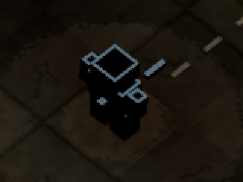
essai A (sombre partout), loupe ×3 — corps 20 · liseré p90 107 · sol 22 · 94 % lisibleessai B (fondu), loupe ×3 — corps 104 · liseré p90 108 · sol 22 · 100 % lisible
Hors du corps de soi : A change 0 pixels (0 allumés), B 0 (0 allumés) · bruit défaut/défaut recapturé : 0
Au bord de sa lumière — sa torche vers le sud, dans le vide : son corps à la naissance du cône
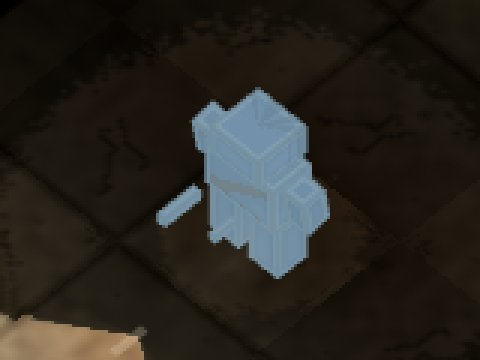
aujourd'hui, loupe ×3 — corps 134 · liseré p90 145 · sol 24 · 100 % lisible
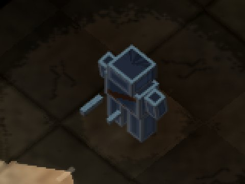
essai A (sombre partout), loupe ×3 — corps 54 · liseré p90 108 · sol 24 · 82 % lisibleessai B (fondu), loupe ×3 — corps 134 · liseré p90 145 · sol 24 · 100 % lisible
Hors du corps de soi : A change 0 pixels (0 allumés), B 0 (0 allumés) · bruit défaut/défaut recapturé : 0
Sa pleine lumière — sa torche vers le mur haut, à 1,5 case : la rétrodiffusion
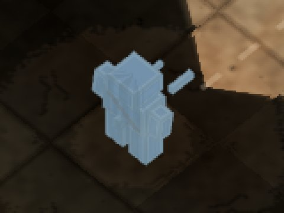
aujourd'hui, loupe ×3 — corps 133 · liseré p90 145 · sol 24 · 100 % lisible
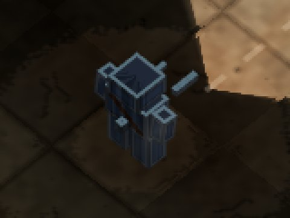
essai A (sombre partout), loupe ×3 — corps 45 · liseré p90 108 · sol 24 · 58 % lisibleessai B (fondu), loupe ×3 — corps 133 · liseré p90 145 · sol 24 · 100 % lisible
Hors du corps de soi : A change 0 pixels (0 allumés), B 0 (0 allumés) · bruit défaut/défaut recapturé : 0
Au bord du cône adverse — sa torche éteinte, J2 le braque de biais
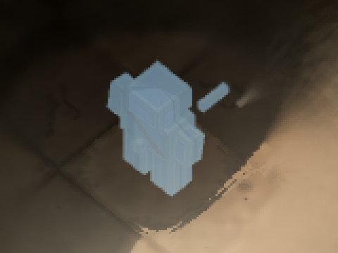
aujourd'hui, loupe ×3 — corps 131 · liseré p90 148 · sol 46 · 98 % lisible
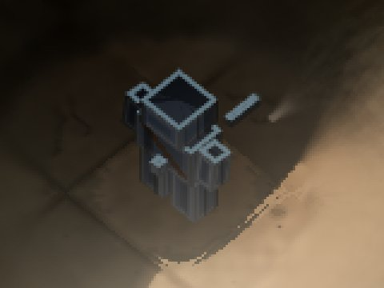
essai A (sombre partout), loupe ×3 — corps 57 · liseré p90 111 · sol 46 · 48 % lisibleessai B (fondu), loupe ×3 — corps 131 · liseré p90 148 · sol 46 · 98 % lisible
Hors du corps de soi : A change 0 pixels (0 allumés), B 0 (0 allumés) · bruit défaut/défaut recapturé : 0
Dans la torche adverse (ébloui) — sa torche éteinte, J2 le braque droit (le voile laiteux de llvmpipe)
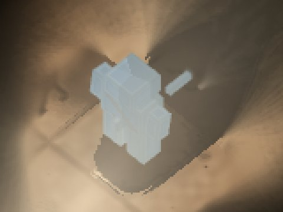
aujourd'hui, loupe ×3 — corps 167 · liseré p90 180 · sol 116 · 90 % lisible
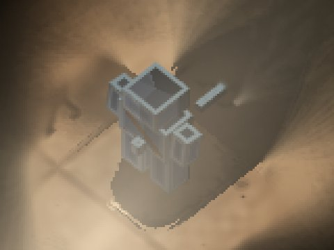
essai A (sombre partout), loupe ×3 — corps 120 · liseré p90 150 · sol 116 · 44 % lisibleessai B (fondu), loupe ×3 — corps 167 · liseré p90 180 · sol 116 · 90 % lisible
Hors du corps de soi : A change 1 pixels (0 allumés), B 0 (0 allumés) · bruit défaut/défaut recapturé : 0
Sous une fusée — sa torche éteinte, sa fusée lancée 1,5 s plus tôt
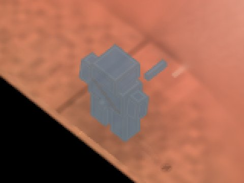
aujourd'hui, loupe ×3 — corps 119 · liseré p90 126 · sol 125 · 20 % lisibleessai A (sombre partout), loupe ×3 — corps 52 · liseré p90 86 · sol 125 · 99 % lisible
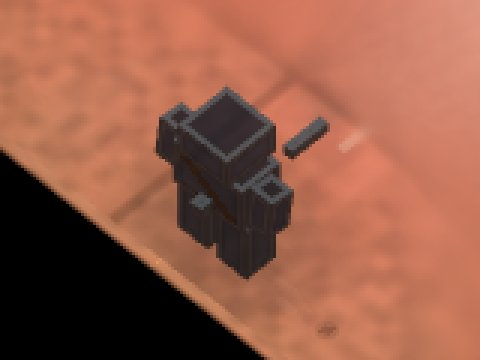
essai B (fondu), loupe ×3 — corps 52 · liseré p90 86 · sol 125 · 99 % lisible
Hors du corps de soi : A change 1 pixels (0 allumés), B 1 (0 allumés) · bruit défaut/défaut recapturé : 0
Le Fumiste
Dans le noir — torches éteintes ; le sol ne doit sa clarté qu'aux bandeaux LED des murs
aujourd'hui, loupe ×3 — corps 104 · liseré p90 108 · sol 22 · 100 % lisible
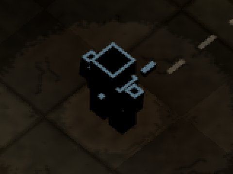
essai A (sombre partout), loupe ×3 — corps 19 · liseré p90 104 · sol 22 · 93 % lisible
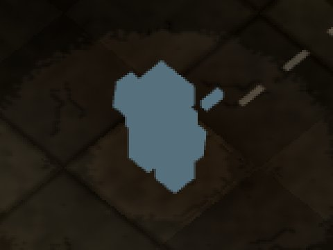
essai B (fondu), loupe ×3 — corps 104 · liseré p90 108 · sol 22 · 100 % lisible
Hors du corps de soi : A change 0 pixels (0 allumés), B 0 (0 allumés) · bruit défaut/défaut recapturé : 0
Au bord de sa lumière — sa torche vers le sud, dans le vide : son corps à la naissance du cône
aujourd'hui, loupe ×3 — corps 134 · liseré p90 145 · sol 24 · 100 % lisible
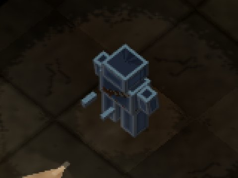
essai A (sombre partout), loupe ×3 — corps 53 · liseré p90 107 · sol 24 · 82 % lisible
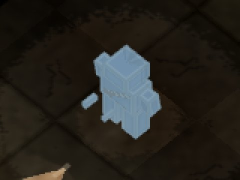
essai B (fondu), loupe ×3 — corps 134 · liseré p90 145 · sol 24 · 100 % lisible
Hors du corps de soi : A change 0 pixels (0 allumés), B 0 (0 allumés) · bruit défaut/défaut recapturé : 0
Sa pleine lumière — sa torche vers le mur haut, à 1,5 case : la rétrodiffusion
aujourd'hui, loupe ×3 — corps 132 · liseré p90 145 · sol 23 · 100 % lisible
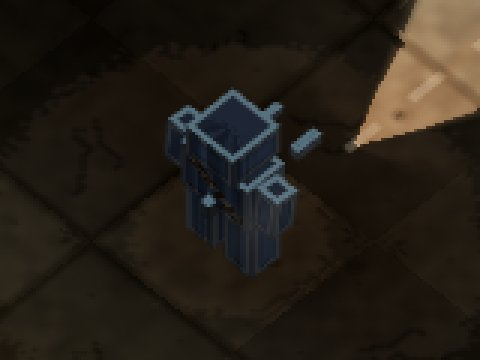
essai A (sombre partout), loupe ×3 — corps 44 · liseré p90 107 · sol 23 · 56 % lisible
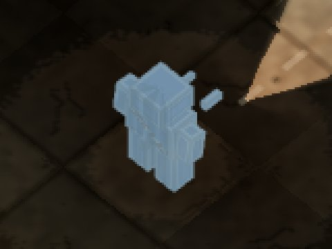
essai B (fondu), loupe ×3 — corps 132 · liseré p90 145 · sol 23 · 100 % lisible
Hors du corps de soi : A change 0 pixels (0 allumés), B 0 (0 allumés) · bruit défaut/défaut recapturé : 0
Au bord du cône adverse — sa torche éteinte, J2 le braque de biais
aujourd'hui, loupe ×3 — corps 132 · liseré p90 148 · sol 47 · 100 % lisible
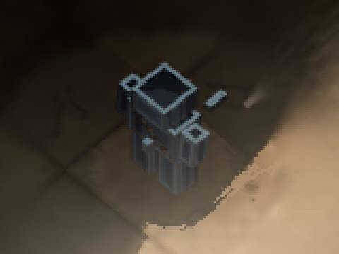
essai A (sombre partout), loupe ×3 — corps 57 · liseré p90 111 · sol 47 · 46 % lisible
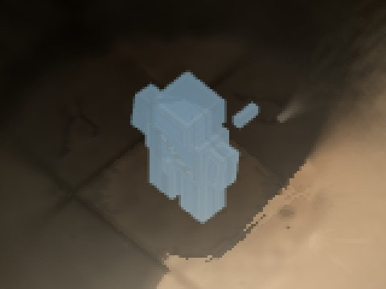
essai B (fondu), loupe ×3 — corps 132 · liseré p90 148 · sol 47 · 100 % lisible
Hors du corps de soi : A change 0 pixels (0 allumés), B 0 (0 allumés) · bruit défaut/défaut recapturé : 0
Dans la torche adverse (ébloui) — sa torche éteinte, J2 le braque droit (le voile laiteux de llvmpipe)
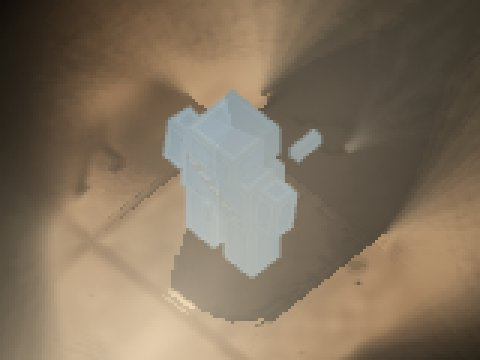
aujourd'hui, loupe ×3 — corps 169 · liseré p90 181 · sol 120 · 90 % lisible
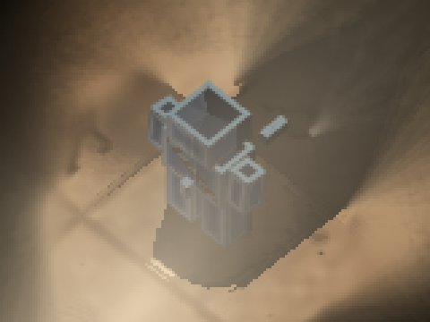
essai A (sombre partout), loupe ×3 — corps 121 · liseré p90 149 · sol 120 · 45 % lisibleessai B (fondu), loupe ×3 — corps 169 · liseré p90 181 · sol 120 · 90 % lisible
Hors du corps de soi : A change 1 pixels (0 allumés), B 0 (0 allumés) · bruit défaut/défaut recapturé : 0
Sous une fusée — sa torche éteinte, sa fusée lancée 1,5 s plus tôt
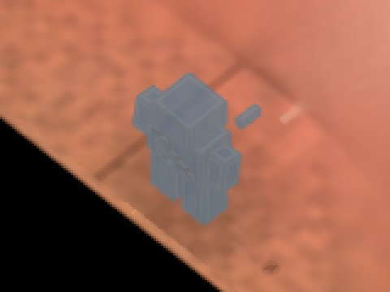
aujourd'hui, loupe ×3 — corps 119 · liseré p90 125 · sol 124 · 22 % lisibleessai A (sombre partout), loupe ×3 — corps 50 · liseré p90 85 · sol 124 · 100 % lisible
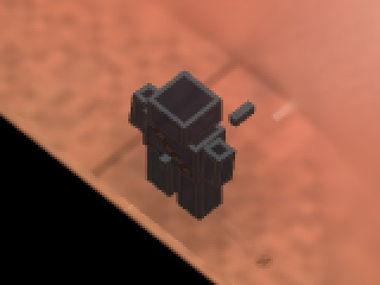
essai B (fondu), loupe ×3 — corps 50 · liseré p90 85 · sol 124 · 100 % lisible
Hors du corps de soi : A change 0 pixels (0 allumés), B 0 (0 allumés) · bruit défaut/défaut recapturé : 0
Le Spectre
Dans le noir — torches éteintes ; le sol ne doit sa clarté qu'aux bandeaux LED des murs
aujourd'hui, loupe ×3 — corps 104 · liseré p90 108 · sol 22 · 100 % lisible
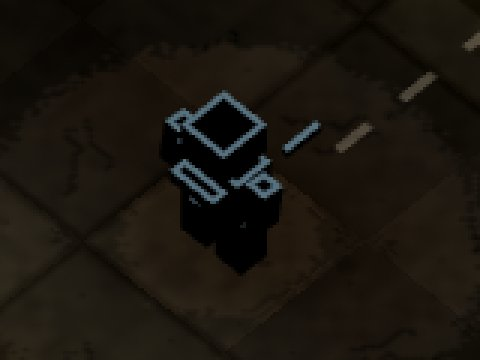
essai A (sombre partout), loupe ×3 — corps 23 · liseré p90 108 · sol 22 · 94 % lisible
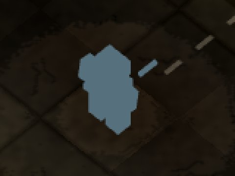
essai B (fondu), loupe ×3 — corps 104 · liseré p90 108 · sol 22 · 100 % lisible
Hors du corps de soi : A change 0 pixels (0 allumés), B 0 (0 allumés) · bruit défaut/défaut recapturé : 0
Au bord de sa lumière — sa torche vers le sud, dans le vide : son corps à la naissance du cône
aujourd'hui, loupe ×3 — corps 133 · liseré p90 145 · sol 24 · 100 % lisible
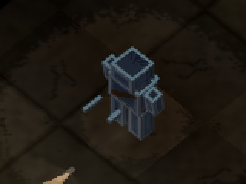
essai A (sombre partout), loupe ×3 — corps 54 · liseré p90 108 · sol 24 · 82 % lisible
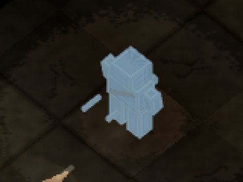
essai B (fondu), loupe ×3 — corps 133 · liseré p90 145 · sol 24 · 100 % lisible
Hors du corps de soi : A change 0 pixels (0 allumés), B 0 (0 allumés) · bruit défaut/défaut recapturé : 0
Sa pleine lumière — sa torche vers le mur haut, à 1,5 case : la rétrodiffusion
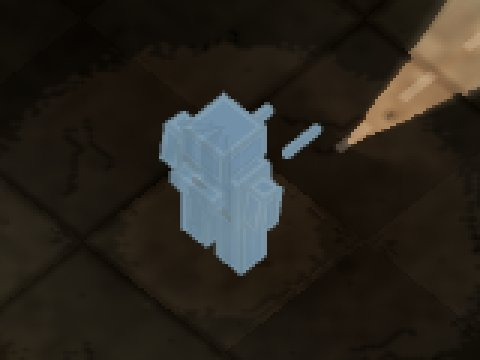
aujourd'hui, loupe ×3 — corps 133 · liseré p90 145 · sol 23 · 100 % lisible
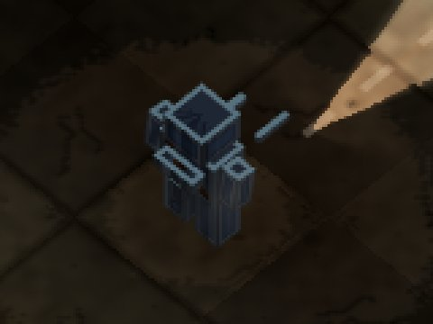
essai A (sombre partout), loupe ×3 — corps 48 · liseré p90 108 · sol 23 · 61 % lisibleessai B (fondu), loupe ×3 — corps 133 · liseré p90 145 · sol 23 · 100 % lisible
Hors du corps de soi : A change 0 pixels (0 allumés), B 0 (0 allumés) · bruit défaut/défaut recapturé : 0
Au bord du cône adverse — sa torche éteinte, J2 le braque de biais
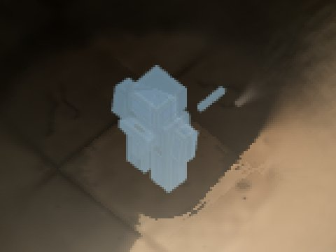
aujourd'hui, loupe ×3 — corps 133 · liseré p90 149 · sol 46 · 99 % lisible
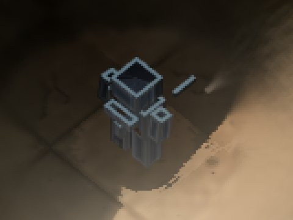
essai A (sombre partout), loupe ×3 — corps 63 · liseré p90 113 · sol 46 · 52 % lisibleessai B (fondu), loupe ×3 — corps 133 · liseré p90 149 · sol 46 · 99 % lisible
Hors du corps de soi : A change 0 pixels (0 allumés), B 0 (0 allumés) · bruit défaut/défaut recapturé : 0
Dans la torche adverse (ébloui) — sa torche éteinte, J2 le braque droit (le voile laiteux de llvmpipe)
aujourd'hui, loupe ×3 — corps 170 · liseré p90 182 · sol 118 · 90 % lisible
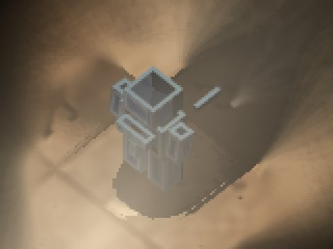
essai A (sombre partout), loupe ×3 — corps 124 · liseré p90 152 · sol 118 · 50 % lisible
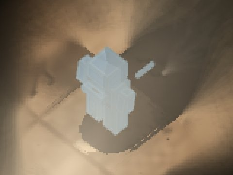
essai B (fondu), loupe ×3 — corps 170 · liseré p90 182 · sol 118 · 90 % lisible
Hors du corps de soi : A change 3 pixels (0 allumés), B 0 (0 allumés) · bruit défaut/défaut recapturé : 0
L'écran scindé, et la vue de l'adversaire au pixel
Le Parasite (pistolet)
aujourd'hui, l'écran entier (réduit)essai A (sombre partout), l'écran entier (réduit)essai B (fondu), l'écran entier (réduit)
J1 dans sa vue, aujourd'hui ×3 — corps 153 · liseré p90 175 · sol 121 · 66 % lisibleJ1 dans sa vue, essai A (sombre partout) ×3 — corps 128 · liseré p90 144 · sol 121 · 40 % lisibleJ1 dans sa vue, essai B (fondu) ×3 — corps 153 · liseré p90 175 · sol 121 · 66 % lisibleJ2 dans sa vue, aujourd'hui ×3 — corps 111 · liseré p90 124 · sol 40 · 99 % lisibleJ2 dans sa vue, essai A (sombre partout) ×3 — corps 56 · liseré p90 91 · sol 40 · 78 % lisibleJ2 dans sa vue, essai B (fondu) ×3 — corps 111 · liseré p90 124 · sol 40 · 99 % lisibleJ1 vu par J2 (l'adversaire), aujourd'hui ×3J1 vu par J2 (l'adversaire), essai A (sombre partout) ×3J1 vu par J2 (l'adversaire), essai B (fondu) ×3
J1 dans la vue de J2 : 1785 pixels, changés par A 0, par B 0 ; J2 dans la vue de J1 : 0 pixels, changés par A 0, par B 0. Bruit : 0.
Le Terrassier (pompe)
aujourd'hui, l'écran entier (réduit)essai A (sombre partout), l'écran entier (réduit)essai B (fondu), l'écran entier (réduit)
J1 dans sa vue, aujourd'hui ×3 — corps 153 · liseré p90 177 · sol 113 · 66 % lisibleJ1 dans sa vue, essai A (sombre partout) ×3 — corps 128 · liseré p90 146 · sol 113 · 34 % lisibleJ1 dans sa vue, essai B (fondu) ×3 — corps 153 · liseré p90 177 · sol 113 · 66 % lisibleJ2 dans sa vue, aujourd'hui ×3 — corps 110 · liseré p90 123 · sol 39 · 100 % lisibleJ2 dans sa vue, essai A (sombre partout) ×3 — corps 55 · liseré p90 86 · sol 39 · 78 % lisibleJ2 dans sa vue, essai B (fondu) ×3 — corps 110 · liseré p90 123 · sol 39 · 100 % lisibleJ1 vu par J2 (l'adversaire), aujourd'hui ×3J1 vu par J2 (l'adversaire), essai A (sombre partout) ×3J1 vu par J2 (l'adversaire), essai B (fondu) ×3
J1 dans la vue de J2 : 2043 pixels, changés par A 0, par B 0 ; J2 dans la vue de J1 : 70 pixels, changés par A 0, par B 0. Bruit : 70.
Le Fumiste
aujourd'hui, l'écran entier (réduit)essai A (sombre partout), l'écran entier (réduit)essai B (fondu), l'écran entier (réduit)
J1 dans sa vue, aujourd'hui ×3 — corps 151 · liseré p90 174 · sol 118 · 68 % lisibleJ1 dans sa vue, essai A (sombre partout) ×3 — corps 123 · liseré p90 139 · sol 118 · 35 % lisibleJ1 dans sa vue, essai B (fondu) ×3 — corps 151 · liseré p90 174 · sol 118 · 68 % lisibleJ2 dans sa vue, aujourd'hui ×3 — corps 110 · liseré p90 124 · sol 39 · 100 % lisibleJ2 dans sa vue, essai A (sombre partout) ×3 — corps 56 · liseré p90 86 · sol 39 · 78 % lisibleJ2 dans sa vue, essai B (fondu) ×3 — corps 110 · liseré p90 124 · sol 39 · 100 % lisibleJ1 vu par J2 (l'adversaire), aujourd'hui ×3J1 vu par J2 (l'adversaire), essai A (sombre partout) ×3J1 vu par J2 (l'adversaire), essai B (fondu) ×3
J1 dans la vue de J2 : 1947 pixels, changés par A 0, par B 0 ; J2 dans la vue de J1 : 0 pixels, changés par A 0, par B 0. Bruit : 0.
Le Spectre
aujourd'hui, l'écran entier (réduit)essai A (sombre partout), l'écran entier (réduit)essai B (fondu), l'écran entier (réduit)
J1 dans sa vue, aujourd'hui ×3 — corps 143 · liseré p90 170 · sol 98 · 65 % lisibleJ1 dans sa vue, essai A (sombre partout) ×3 — corps 119 · liseré p90 137 · sol 98 · 51 % lisibleJ1 dans sa vue, essai B (fondu) ×3 — corps 143 · liseré p90 170 · sol 98 · 65 % lisibleJ2 dans sa vue, aujourd'hui ×3 — corps 110 · liseré p90 124 · sol 39 · 100 % lisibleJ2 dans sa vue, essai A (sombre partout) ×3 — corps 56 · liseré p90 84 · sol 39 · 78 % lisibleJ2 dans sa vue, essai B (fondu) ×3 — corps 110 · liseré p90 124 · sol 39 · 100 % lisibleJ1 vu par J2 (l'adversaire), aujourd'hui ×3J1 vu par J2 (l'adversaire), essai A (sombre partout) ×3J1 vu par J2 (l'adversaire), essai B (fondu) ×3
J1 dans la vue de J2 : 1773 pixels, changés par A 0, par B 0 ; J2 dans la vue de J1 : 82 pixels, changés par A 0, par B 0. Bruit : 82.
Le correctif de pré-passe, à l'image (banc des corps, llvmpipe)
Chaque prise jugée contre la même scène, pré-passes cachées (critère de l'ordre 426). État corrigé : rien, détail, Q39, Q39 + détail (fusionné et boîtes). État d'avant (--passe-ancienne) : deux programmes, exprès. Témoin : la couleur du torse cachée, sa pré-passe laissée — l'aspect exact du défaut, que la mesure doit voir.